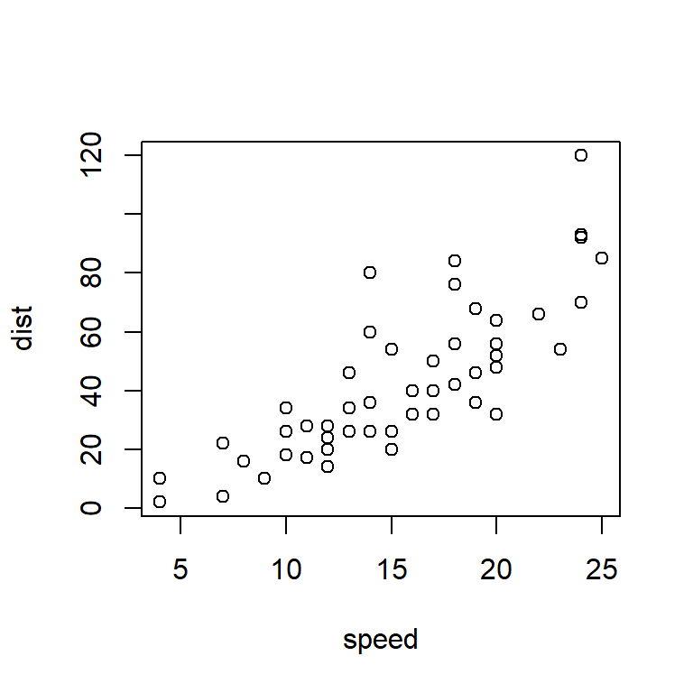
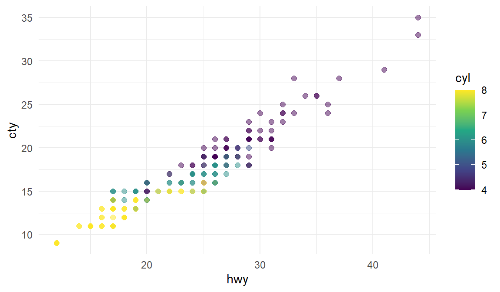
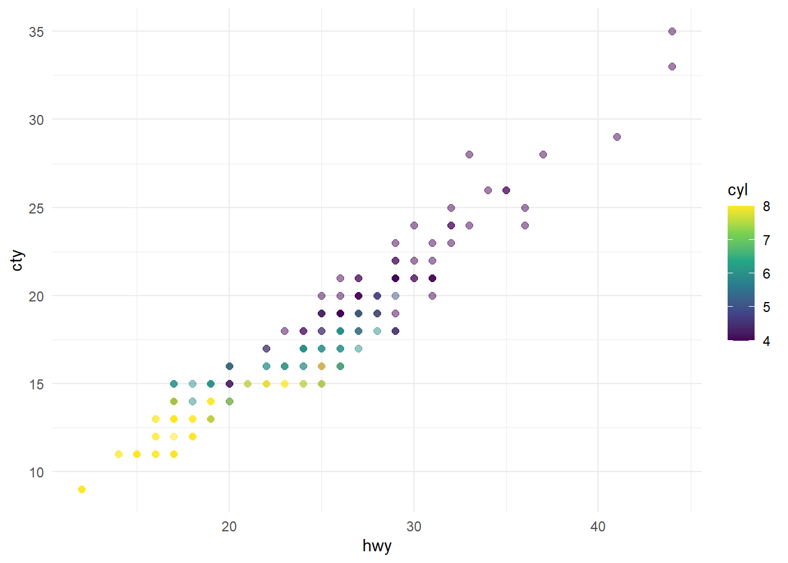
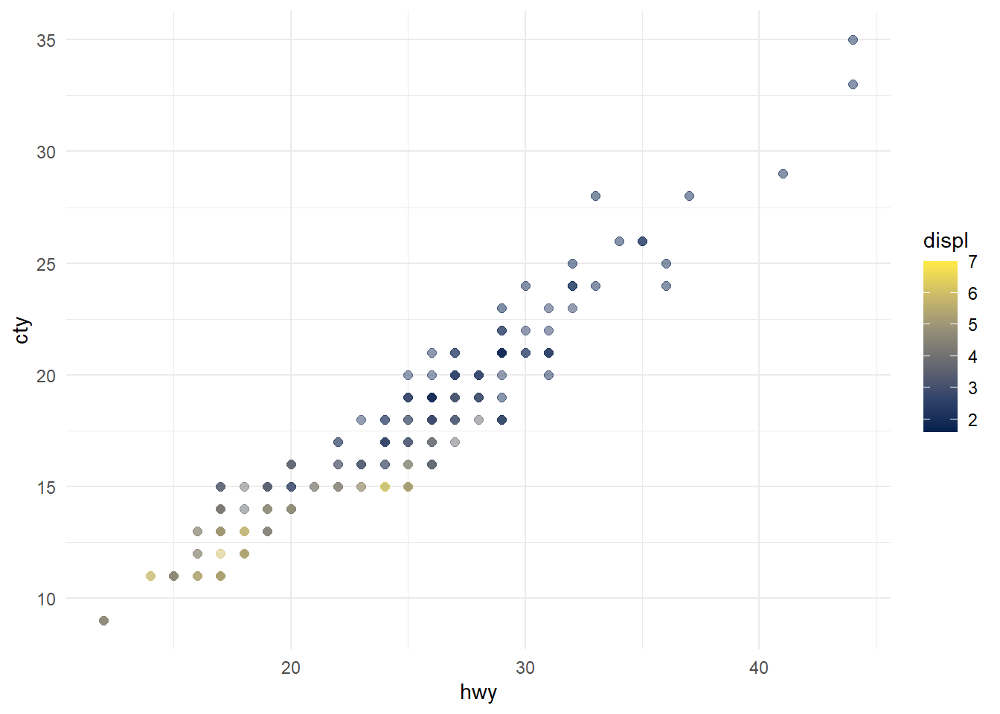

```{r}
cat("This is a code chunk")
```This is a code chunkEvery Quarto document is built from exactly three things. Understanding how they interact is the key to everything else in this lecture
The YAML block sits at the very top of every .qmd file, enclosed in triple dashes (---). It stores document-level configuration: author information, output format, global execution options, styles, and more. Changes here affect the entire document.
This document uses:
---
title: "Quarto"
author: "Wojciech Hardy"
date: "4/11/2023"
format: html
execute:
echo: fenced
---Note:
execute: echo: fencedis what makes code chunks display with their fence backticks visible in the output — useful for teaching. In a regular report you would typically setecho: falsehere.
Applies a Bootstrap CSS theme to the HTML output. flatly is a clean, modern light theme. Other built-in options include cosmo, lumen, journal, darkly (dark mode), slate (dark), and others. This one line completely changes the visual appearance of the rendered document without you writing any CSS.
The text layer of the document. Markdown is a lightweight markup language — plain text with simple syntax for formatting. It keeps your source clean and readable, and plays well with version control.
Where the magic happens. Code whose output — numbers, tables, plots — becomes part of the document automatically. Every time you render, the output is freshly generated from the source.
Let’s start with Markdown!
If you’ve used RMarkdown before, Quarto will feel very familiar — it is essentially RMarkdown’s successor. The syntax is mostly compatible, and most .Rmd files render in Quarto without changes. The main differences are in YAML structure and chunk option syntax (more on that later).
Might want to take a look at the official FAQ
💡 Tip: In RStudio, try switching between Source and Visual mode (top-left of the editor). Visual mode gives you a WYSIWYG view — useful for tables and formatting. Also consider enabling Render on Save so the preview updates automatically as you type.
You don’t need to memorise Markdown syntax — keep a reference nearby. Note: the link syntax shown below is itself a Markdown example.
[A Markdown cheatsheet](https://www.markdownguide.org/cheat-sheet/)
[A Quarto cheat sheet](https://res.cloudinary.com/dyd911kmh/image/upload/v1676540721/Marketing/Blog/Quarto_Cheat_Sheet.pdf)
The most common inline formatting uses asterisks or underscores. Either syntax works — just be consistent.
Some basic text formatting includes *Italics* or _Italics_ (Italics) and **Bold** or __Bold__ (Bold) text. Bold
Line breaks in Markdown behave differently than you might expect. The three examples below look similar in the source but render differently:
Some text sdajiodf
Some text
sdajiodf
Some text
sdajiodf
The first pair has no special treatment — they merge into one paragraph. The second pair has two trailing spaces after
Some text, which forces a line break within the same paragraph. The third has a blank line between them, creating two separate paragraphs. This trips up almost everyone the first time.
Superscripts can be done like so: R^2^ R2
Subscripts can be done like so: H~2~O H2O
Headers are created with # symbols. The number of # symbols determines the level. They also automatically appear in the table of contents (when toc: true is set in the YAML).
# Header 1
## Header 2
### Header 3
#### Header 4
##### Header 5
Markdown is forgiving with ordered list numbering — it corrects errors automatically. The source below intentionally uses 2. twice, but the rendered output still numbers correctly.
1. Item 1
2. Item 2
2. Item 3 # Note the error in numbering
Item 1
Item 2
Item 3 # It's fine here though
Use *, -, or + for unordered lists — they all work the same way.
* Item
* Another item
Item
Another item
Nesting is done with indentation (4 spaces or 1 tab). You can mix ordered and unordered levels freely.
1. Item 1
- Item 2
- Item 3
Markdown tables are written with | pipe characters and : colons for column alignment. The colons in the separator row control alignment: :- left, -: right, :-: centre.
| Day | Hour | Group |
|---|---|---|
| Wednesday | 9:45 | 1 |
| Thursday | 16:45 | 2 |
| Thursday | 18:30 | 3 |
(this is a raw Markdown approach — later we’ll see knitr::kable() for generating tables from data automatically)
Blockquotes are created with >. Useful for callout text, definitions, or attribution.
> Hmmm
Hmmm
- Geralt of Rivia
When rendering to HTML, you can embed raw HTML directly in your Markdown. This is an escape hatch for anything Markdown can’t express natively — custom tables, styled elements, embedded media. Here’s something copied and pasted directly from the YAML Wikipedia page source code:
|
|
|
| Filename extensions |
.yaml, .yml
|
|---|---|
| Internet media type | Not registered |
| Initial release | 11 May 2001 |
| Latest release |
1.2 (Revision 1.2.2)
1 October 2021 |
| Type of format | Data interchange |
| Open format? | Yes |
| Website |
yaml |
Quarto uses MathJax to render LaTeX-style equations. Inline equations use single $, and display (standalone) equations use double $$.
You can insert equations with the same syntax as in LaTeX (MathJax). E.g. within a sentence $ \sum (x + 1) $ \(\sum (x + 1)\) or as standalone with double $$ at start and finish:
\[\int_{-\infty}^{\infty}1/(b-a) \, dx\]
This is the core feature of Quarto. Code chunks are fenced blocks that start with three backticks and a language name in {}. When you render, the code runs and the output is embedded directly in the document.
Supported languages include R and Python (and others like Julia, Observable JS). Empty chunks are valid — useful as placeholders.
A simple R example — the cat() output appears directly below the chunk:
```{r}
cat("This is a code chunk")
```This is a code chunkYou can also run individual chunks within the RStudio editor (green play button, or Ctrl+Shift+Enter) without rendering the full document. This is useful during development.
```{r}
summary(cars)
``` speed dist
Min. : 4.0 Min. : 2.00
1st Qu.:12.0 1st Qu.: 26.00
Median :15.0 Median : 36.00
Mean :15.4 Mean : 42.98
3rd Qu.:19.0 3rd Qu.: 56.00
Max. :25.0 Max. :120.00 ```{r}
plot(pressure)
```
You can also use Python in Quarto with Jupyter Notebook or even use R and Python interchangeably in the same document via the reticulate package. A Python chunk creates an object, and an R chunk can access it using the py$ prefix:
```{python}
#| eval: false
import pandas
flights = pandas.read_csv("../Data/flights.csv")
flights = flights[flights['dest'] == "ORD"]
flights = flights[['carrier', 'dep_delay', 'arr_delay']]
flights = flights.dropna()
``````{r}
#| eval: false
library(ggplot2)
ggplot(py$flights, aes(carrier, arr_delay)) + geom_point() + geom_jitter()
cat("Example from: https://rstudio.github.io/reticulate/articles/r_markdown.html")
```Note: The chunks above use
eval: falsebecause they depend on a local data file (../Data/flights.csv). The code is displayed for reference only.
For nicer tables from data frames, use kable() from the knitr package instead of printing raw output. Both calls below produce the same table — the "html" argument in the second version explicitly targets HTML output.
```{r}
knitr::kable(head(mtcars[, 1:4]), caption = "A kable table, ver 1")
```| mpg | cyl | disp | hp | |
|---|---|---|---|---|
| Mazda RX4 | 21.0 | 6 | 160 | 110 |
| Mazda RX4 Wag | 21.0 | 6 | 160 | 110 |
| Datsun 710 | 22.8 | 4 | 108 | 93 |
| Hornet 4 Drive | 21.4 | 6 | 258 | 110 |
| Hornet Sportabout | 18.7 | 8 | 360 | 175 |
| Valiant | 18.1 | 6 | 225 | 105 |
```{r}
knitr::kable(head(mtcars[, 1:4]), "html", caption = "A kable table, ver 2")
```| mpg | cyl | disp | hp | |
|---|---|---|---|---|
| Mazda RX4 | 21.0 | 6 | 160 | 110 |
| Mazda RX4 Wag | 21.0 | 6 | 160 | 110 |
| Datsun 710 | 22.8 | 4 | 108 | 93 |
| Hornet 4 Drive | 21.4 | 6 | 258 | 110 |
| Hornet Sportabout | 18.7 | 8 | 360 | 175 |
| Valiant | 18.1 | 6 | 225 | 105 |
Chunk options are written as special comments at the top of a chunk, prefixed with #|. They give you fine-grained control over what appears in the output and how.
Old vs. new syntax: You may encounter two styles of chunk options. The old RMarkdown style uses
=andTRUE/FALSE. The new Quarto style uses:andtrue/false. Both work, but the new style is preferred going forward. This document mixes both intentionally so you recognise each.Old:
#| echo = FALSE
New:#| echo: false
You can use R variables as chunk option values — useful when you want consistent dimensions across many figures without hardcoding numbers everywhere.
```{r}
typical_width <- 4
typical_height <- 4
``````{r}
#| fig.width = typical_width,
#| fig.height = typical_height
plot(cars)
```
Inline R expressions embed a computed value directly into prose. The syntax is a backtick-r-space-expression-backtick. The first line below shows the raw syntax; the second shows the rendered result.
We have previously set a typical width to ‘r typical_width’ and the typical height to ‘r typical_height’.
We have previously set a typical width to 4 and the typical height to 4.
Why this matters: If your data changes, every inline number in your text updates automatically on the next render. No more manually editing “the average was 4.2” after rerunning an analysis.
Beyond dimensions, you can add captions, alt text for accessibility, and cross-reference labels. Note that figure labels must start with fig- for the @fig- cross-reference syntax to work.
```{r}
#| label: fig-cars
#| fig-cap: "City and highway mileage for 38 popular models of cars."
#| fig-alt: "Scatterplot of city vs. highway mileage for cars, where points are colored by the number of cylinders. The plot displays a positive, linear, and strong relationship between city and highway mileage, and mileage increases as the number of cylinders decreases."
#| fig-width: 6
#| fig-height: 3.5
ggplot(mpg, aes(x=hwy, y=cty, color=cyl)) +
geom_point(alpha = 0.5, size = 2) +
scale_color_viridis_c() +
theme_minimal()
```
And you can refer to Figure 1 (@fig-cars) in-text!
You can also control the layout — here two plots are placed side by side using layout-ncol: 2. The column: page option lets the figure span beyond the text column width.
```{r}
#| label: fig-mpg
#| fig-cap: "City and highway mileage for 38 popular models of cars."
#| fig-subcap:
#| - "Color by number of cylinders"
#| - "Color by engine displacement, in liters"
#| layout-ncol: 2
#| column: page
ggplot(mpg, aes(x = hwy, y = cty, color = cyl)) +
geom_point(alpha = 0.5, size = 2) +
scale_color_viridis_c() +
theme_minimal()
ggplot(mpg, aes(x = hwy, y = cty, color = displ)) +
geom_point(alpha = 0.5, size = 2) +
scale_color_viridis_c(option = "E") +
theme_minimal()
```

evalThe eval option accepts any R expression that returns TRUE or FALSE — not just a literal value. This means you can make chunk execution conditional on runtime state, such as what day it is.
(is.weekend comes from the chron package)
```{r}
#| eval = is.weekend(Sys.Date())
cat("It's the weekend! :)")
``````{r}
#| eval = !is.weekend(Sys.Date())
cat("It's not the weekend! :(")
```It's not the weekend! :(By default, Quarto stops rendering when it hits an error in a chunk. Setting error: true tells Quarto to display the error message in the output and continue rendering the rest of the document. Useful when you want to show that something fails.
```{r}
#| error = TRUE
543 + "clearly a text and not a number"
```Error in 543 + "clearly a text and not a number": non-numeric argument to binary operatorBy default Quarto stops after encountering an error. We can tell it to continue.
Caching saves the output of a chunk to disk so it doesn’t re-run on every render. The chunk only re-executes if its contents change.
```{r}
x <- 15
``````{r}
#| label = "slow_chunk",
#| cache = TRUE
Sys.sleep(10)
a <- 5 + x
a
```[1] 20The chunk gets reevaluated if anything changes within the chunk. Make sure you know what you’re doing when caching.
By default, cache invalidation only detects changes inside the chunk — not in external files or other chunks it depends on. We can use cache.extra = to specify additional conditions for cache invalidation (i.e. to repeat the calculations), e.g.:
file.mtime('filename') — modification time of the file changedtools::md5sum('filename') — content of the file changedgetRversion() — R version changedOther caching options:
cache-comments — if you don’t want to recalculate after changing a commentcache-lazy — loading with lazyload() instead of load() (see Lazy loading)cache-vars — cache only specified objectsdependson — reevaluate conditional on a change in a different chunk (or chunks)autodep — will try to find the between-chunk dependencies on its ownThe options below control what your reader sees. The general principle: during development, show everything; in a final report, hide what isn’t useful to the reader.
echo: falseUse this when you want to show results but not the code that produced them. The default here is echo: true (code shows), overriding the global echo: fenced set in the YAML.
1+1[1] 2message: falsePackage loading often prints informational messages that clutter the output. message: false silences them without affecting the output.
```{r}
#| message = FALSE
message("You will not see the message.")
```warning: falseR sometimes produces warnings for valid operations (e.g. vector recycling). Use this to suppress them when you’ve already verified they’re not a problem.
```{r}
#| warning = FALSE
1:2 + 1:3
```[1] 2 4 4fig.show: 'hide'The code runs and the plot is produced, but it won’t appear in the output. Useful when you want to generate a plot object for later use without displaying it immediately.
```{r}
#| fig.show = "hide"
plot(cars)
```include: falseThe nuclear option — the chunk runs (so all variables and side effects are available), but nothing appears in the document at all. Standard practice for setup chunks that load libraries.
results: 'hide'The code is shown, it runs, but the printed output is suppressed. Unlike include: false, the code itself is still visible.
```{r}
#| results = "hide"
a*typical_height*typical_width
```results: 'asis'Normally Quarto treats chunk output as plain text. With results: 'asis', the output is passed directly to Markdown and interpreted as markup. This lets you generate dynamic lists, headers, or tables entirely from code.
```{r}
#| results = "asis"
for (i in 1:10) {
cat("- Item", i, "\n")
}
```(Note that it got interpreted as Markdown markup — each cat() line became a real list item!)
Pick a TV show that had its premieres on TV and thus has some viewership numbers reported on Wikipedia. E.g. Suits (see the table just above the References section).
Then create a short report — you can copy descriptive content from Wikipedia for this task. The report should contain:
Tip: Try to make more than one commit as you work — divide your work into logical steps (text first, then data, then plots). This is good practice and part of the grading criteria.
insert_calculated_number between seasons 3 and 5).echo: false globally.render your report and save it in the relevant folder of your repo.